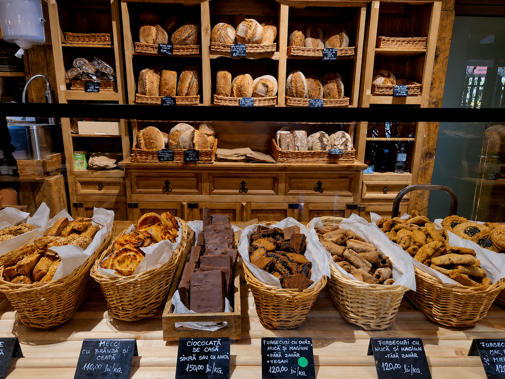

Despre noi
Întâi a fost un vis tot mai lămurit. Acela de-a reda pâinii vechea ei putere hrănitoare. Și de-a o face cu respect, doar din apă, făină și sare. Cu maia naturală. În 2016 a apărut Brutăria Claudia. Un loc devenit curând prea mic pentru toți ce s-au descoperit pe ei înșiși drept iubitorii pâinii cu maia.
Am ajuns astăzi pentru că am învățat de la maia răbdarea și respectul pentru ritmul firesc al lucrurilor. Dar și pentru că am învățat de la oamenii din jurul nostru, de ambele părți ale tejghelei, că nu coacem doar pâine, ci și afinități. Și pâinea noastră ne hrănește profund pe toți.
Despre Brutăria Claudia
De la o idee simplă la o brutărie iubită în Cluj

Ce ne definește
Lucruri simple, făcute cu grijă
Maia naturală
Pâinea este dospită lent, cu maia naturală, pentru gust, textură și aromă autentică.
Ingrediente curate
Produsele sunt pregătite cu făinuri atent alese, multe dintre ele integrale sau bio.
Gust de acasă
Fiecare produs păstrează ideea de brutărie caldă, sinceră și apropiată de oameni.
„Pâinea bună are nevoie de timp.”
Iar la Brutăria Claudia, timpul, maiaua și grija pentru detalii se simt în fiecare produs.
Vezi produsele